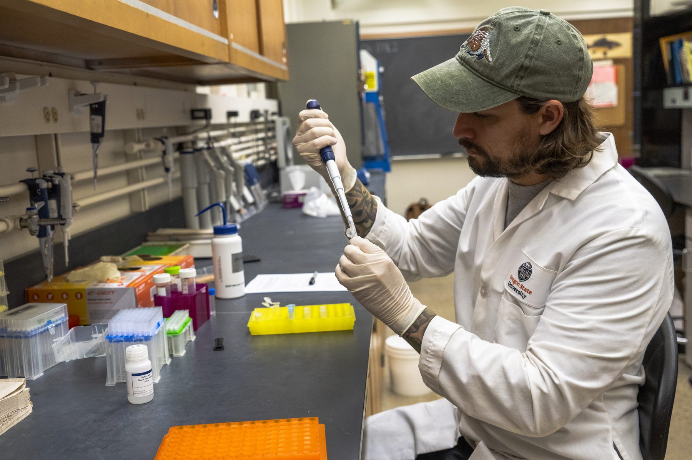
Cascadia Genetics Laboratory
Hair, scat and a liter of stream water become answers: which species are present, what they eat, and how many individuals there are, without capturing a single animal.
Explore Genetics Lab →
The Cascadia Wildlife Lab finds and reads that evidence with DNA, sound, cameras and statistics, measuring wildlife at the scale conservation decisions are made. We share our methods openly.
* The Northwest Forest Plan acoustic monitoring network, run by our partners at the Pacific Northwest Bioacoustics Lab, a collaboration of the USDA Forest Service and Oregon State University. Figures from the 2024 annual report and the lab's description of PNW-Cnet.
One lab reads DNA. One watches and listens. One turns the evidence into numbers a decision can rest on.

Hair, scat and a liter of stream water become answers: which species are present, what they eat, and how many individuals there are, without capturing a single animal.
Explore Genetics Lab →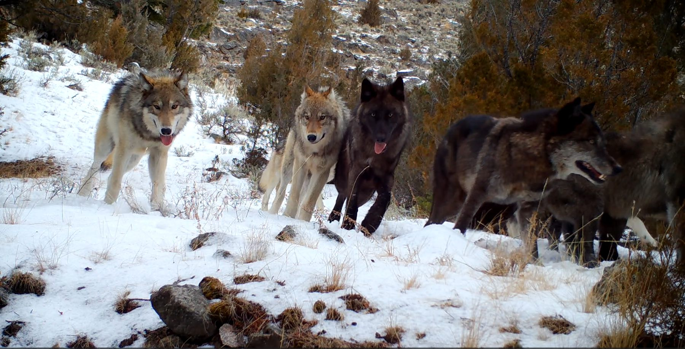
Neural networks that find animals in millions of camera-trap images and hours of forest sound, in partnership with the Pacific Northwest Bioacoustics Lab.
Explore AI Lab →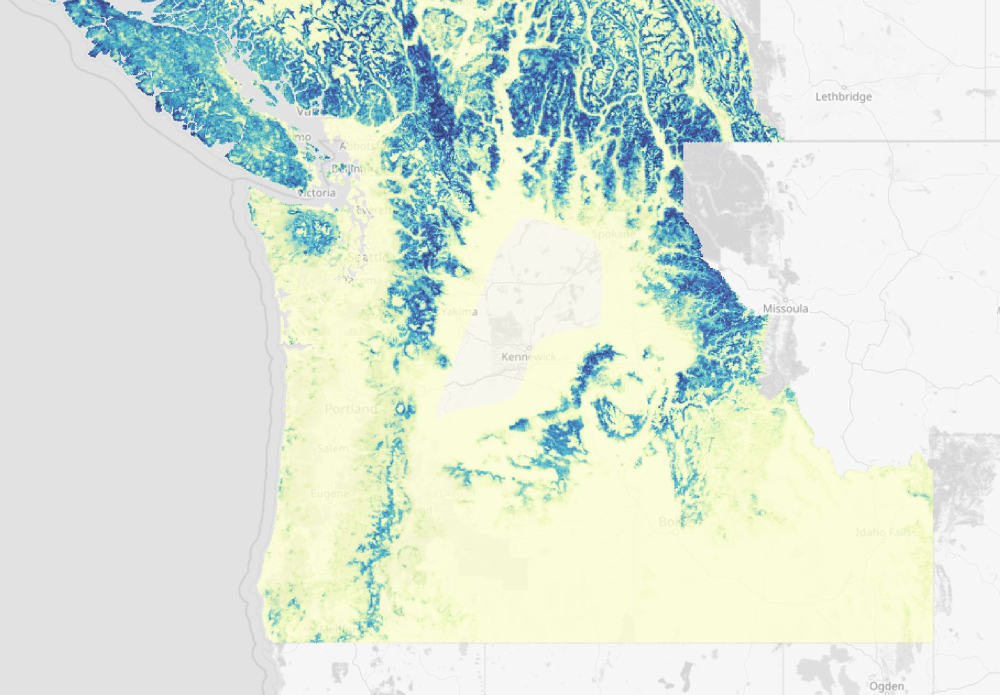
Turns detections into the numbers managers need: how many animals there are, where they live, and whether they are increasing. The methods are published as free, tested tools.
Explore Analysis Lab →The decisions that shape forests, rivers and coasts are still made on evidence that is sparse, slow and incomplete. Conservation decisions are only as good as the evidence beneath them, and the evidence is only as good as the methods that produced it.
So we pair large field datasets with molecular, analytical and computational methods strong enough to get real answers out of them, and we document those answers to standards that hold up under scientific and regulatory scrutiny.
Our role is not to argue for particular outcomes. It is to make the evidence good enough that the argument can be had honestly.
The Lab brings together faculty, research biologists and computational scientists from Oregon State University, the USDA Forest Service, NCASI and partner institutions. Each leads their own program and contributes specialized expertise toward that shared goal.
Meet the Team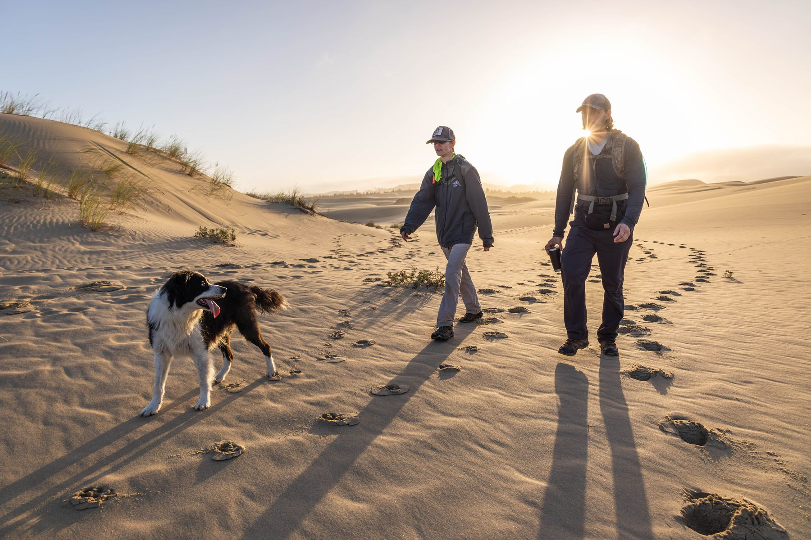
Detection-dog survey for Humboldt martens, Oregon coast · Photo: Carter Pardue
We publish the methods along with the findings. Explore the maps, run the analyses yourself, or take the course.
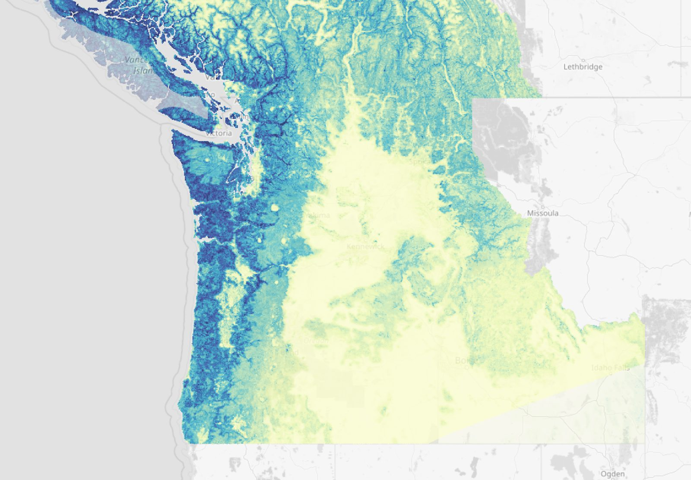
Rufous Hummingbird, modeled probability of detectionAnimated maps of where birds are found and how that has changed since 2002, from two separate models: 242 species across the Pacific Northwest at 1 km, and 610 across North America at 3 km. Modeled from eBird and satellite data. Each model's validation scores are published beside its map, including the tests it did not pass.
A library of vetted statistical analyses for wildlife data, from occupancy and spatial capture-recapture to movement and conservation genetics. Describe your data and your question in your own words. An AI agent runs code that was written once, tested against known answers and checked by a second, independent agent.
Explore CascadiaTools →A hands-on tutorial built for the Oregon Chapter of The Wildlife Society. Install the tools, run worked examples on your own laptop, and learn to check an analysis instead of taking it on trust.
Take the Course →Pacific Marten — Camera Trap, Pacific Northwest
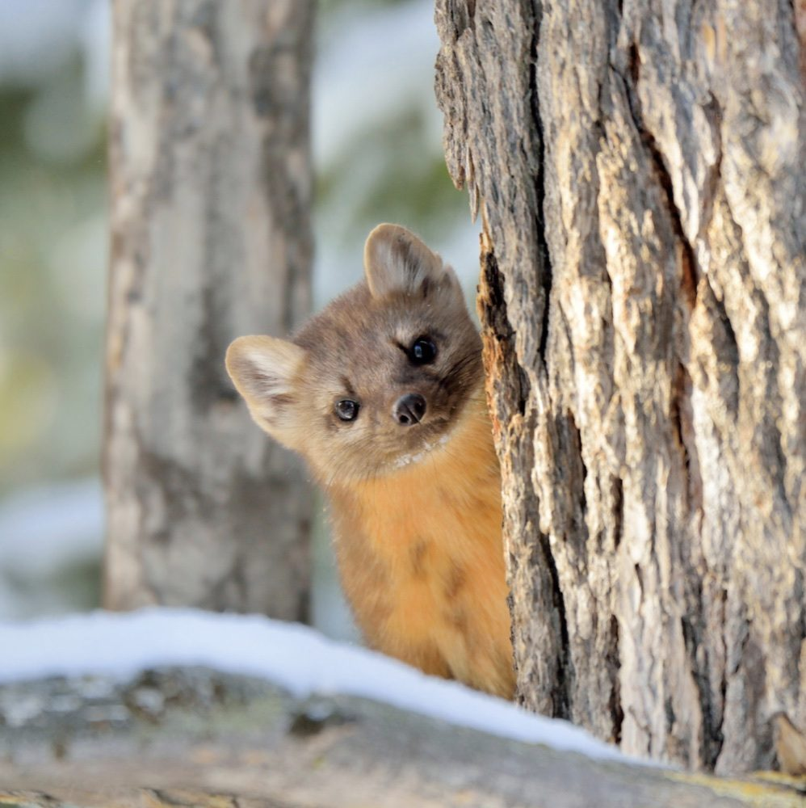
Pacific Marten — Martes caurina
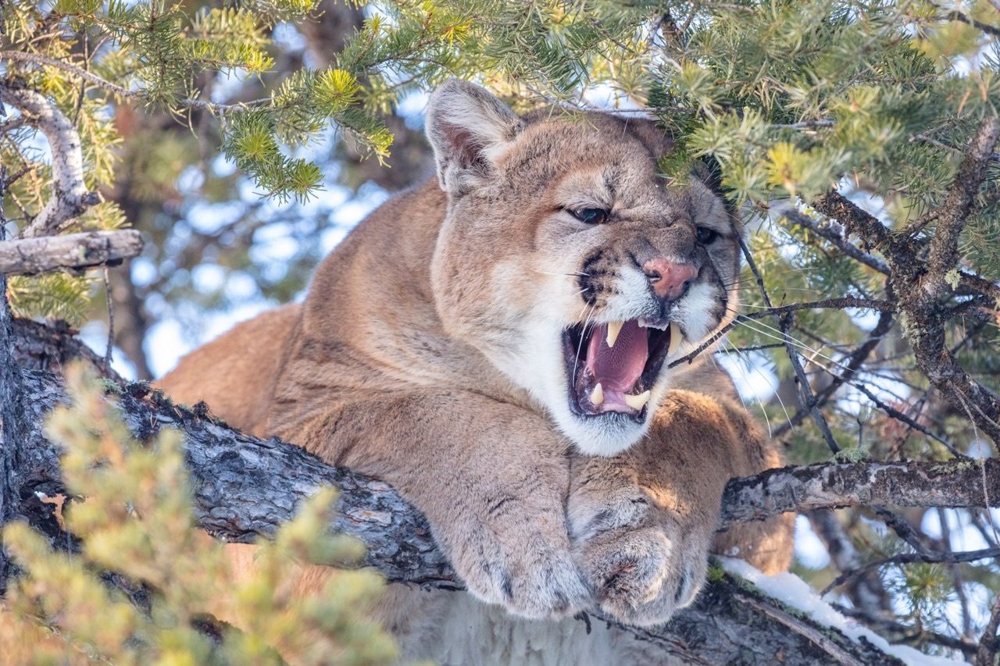
Mountain Lion — Puma concolor
Faculty, research biologists, and computing scientists who together form the Cascadia Wildlife Lab, each bringing deep expertise in their own discipline and research group
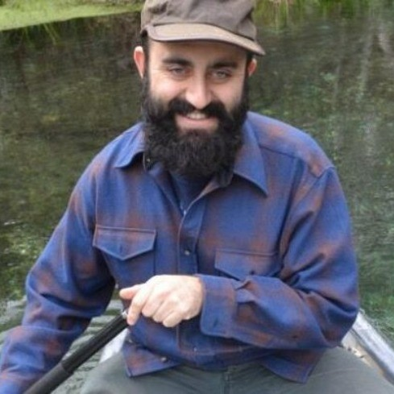
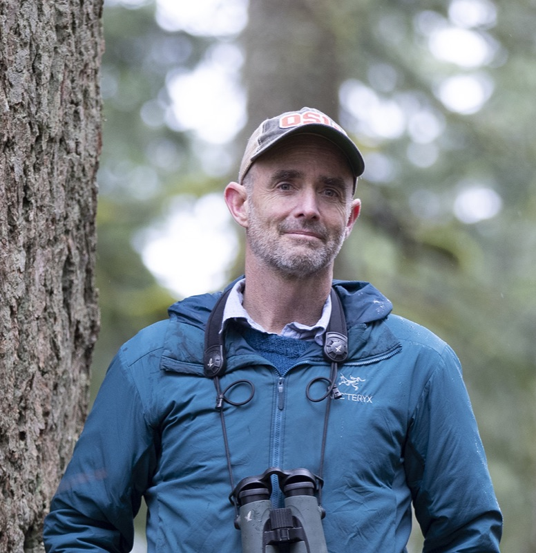
Professor, Oregon State University
Forest Landscape Ecology Lab →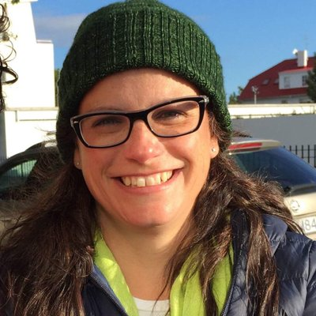
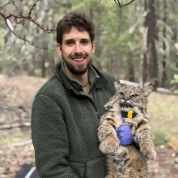
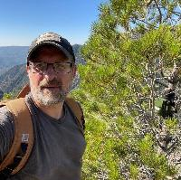
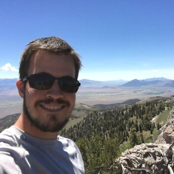
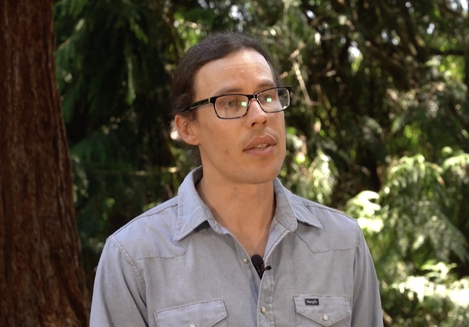
Research Scientist
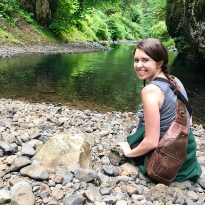
Research Scientist
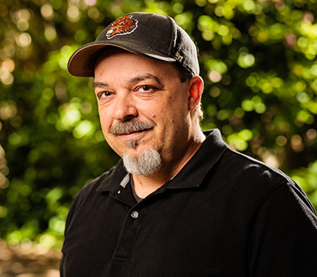
Director, Research & Academic Computing, OSU
OSU Research Computing →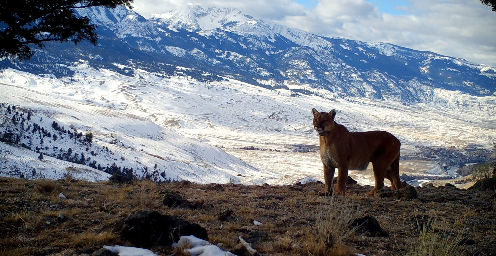
Every capability described on this site, from the genetics lab to the AI models to the analytical methods, exists because someone funded its development. Partners and supporters make the next set of hard-to-study species and hard-to-answer questions tractable.
Tell us about your study system and what you need to learn from it. We will tell you honestly whether we are the right group for the work, and who else to talk to if we are not.
Project inquiries, partnerships, gifts, press and questions about the tools all reach the same people.
info@cascadiawildlifelab.orgField and laboratory photographs by Carter Pardue and Brook Ferris.